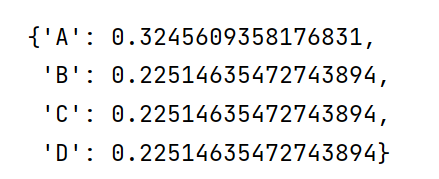
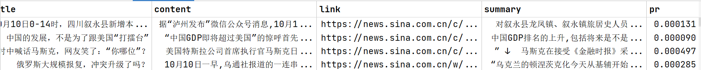

PageRank，又称网页排名、谷歌左侧排名，是一种由搜索引擎根据网页之间相互的超链接计算的技术，而作为网页排名的要素之一，以Google公司创办人拉里·佩奇（Larry Page）之姓来命名。Google用它来体现网页的相关性和重要性，在搜索引擎优化操作中是经常被用来评估网页优化的成效因素之一。
这里就不讲具体的原理了，我们直接来看一个例子，怎么用networkx库来计算图中每个节点的PageRank值。
2.1 下载networkx库 直接在命令行输入
可能会安装失败，如果安装失败就去网上搜教程，如果安装成功并且可以使用，那就当我没说。
假设我们现在有这样一个图
我们怎么用networkx计算图中每个节点的PageRank值呢。networkx中提供了一个方法，可以很简单的计算出PageRank值，只要我们把图中所有边都加入这个类中。
1 2 3 4 5 6 7 8 9 10 11 12 13 import networkx as nx'A' , 'B' , 'C' , 'D' ]for node in nodes:'A' , 'B' ), ('A' , 'C' ), ('A' , 'D' ), ('B' , 'A' ), ('B' , 'D' ), ('C' , 'A' ), ('D' , 'B' ), ('D' , 'C' )]for edge in edges:0 ], edge[1 ])
代码的输出如下(在jupyter notebook中运行)

最后的计算结果是一个字典，包含所有链接的PageRank值。
1 2 3 4 5 6 7 8 9 10 11 12 13 14 15 16 17 18 19 20 21 22 23 24 25 26 27 28 29 30 31 32 33 34 35 36 37 38 39 40 41 42 43 44 45 46 47 48 49 50 51 52 53 54 55 56 57 58 59 60 61 62 63 import osimport jiebaimport loggingimport pandas as pdimport jsonimport warningsimport networkx as nxfrom tqdm import tqdm'ignore' )2000 '../sina' def pagerank (files: list ):'link' ] for f in files]print ("len of all links: " , len (set (link_set)))for node in link_set:for idx, link in enumerate (link_set):for url in set (files[idx]['hrefs' ]): if url in link_set:print ('pagerank_dic: ' , pagerank_dic)'../files/all_files.csv' , encoding='utf-8' )'pr' ] = 0 'pr' ] = all_files['link' ].apply(lambda x: pagerank_dic.get(x))'../files/all_files.csv' , encoding='utf-8' , index=False )def calculate_pr ():lambda x: int (x.split('.' )[0 ]))print ('filenames: ' , filenames)for idx, filename in enumerate (tqdm(filenames, desc='读取文件' )):try :'/' + filenamewith open (path, encoding='utf-8' ) as f:if idx == max_file_num:break except Exception as e:print (e)if __name__ == '__main__' :
计算的结果保存到files文件夹下的all_files.csv下

可以看到现在的csv文件中多了一列pr，为所有网页的pr值。
3.倒排索引的建立 之后就可以建立倒排索引了，详情请看 。